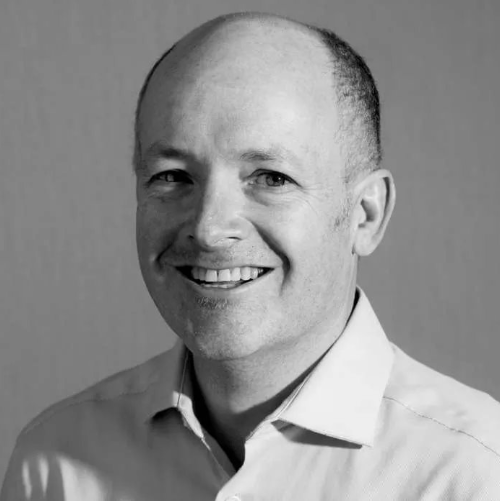
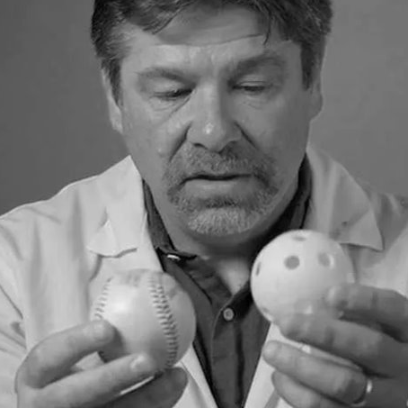

Flurry Powders is built by scientists, engineers, and innovators dedicated to advancing pharmaceutical development.
Andreas Boeckl is an intuitive problem solver, who excels when confronted with seemingly unsolvable problems, frequently generating approaches that the rational mind would not think to chase. He has a pragmatic mindset that is fixated on efficiency – testing hypotheses and validating concepts with lightweight experiments, prototypes, or thought experiments before committing precious resources.
Obsessed with spray drying as a means to manipulate the physicochemical properties of materials, Boeckl founded Flurry Powders in 2010 with the vision of bridging the gap between product ideation and clinical and commercial manufacturing. Prior to Flurry Powders, Boeckl has held engineering positions in research and development at Inhale Therapeutic Systems (Nektar Therapeutics), Lockheed Martin's Advanced Technology Center, and as an independent consultant to industry.
During his 8 years at Inhale, he invented, designed, tested, and implemented novel spray drying and powder filling equipment that addressed the challenges presented by ultra-fine, low density, spray dried powders. Andreas holds a Bachelor’s of Science in Materials Science and Engineering from the University of Florida.

As a subject matter expert on multiple inhaled drug product approvals, Miller holds specific expertise in the formulation and physical characterization of small molecules and proteins to prevent and solve problems in applied research and product development environments. He has led multi-disciplinary teams that have conducted early-phase preclinical and clinical development over 25 years at both startups and large pharmaceutical companies, including Inhale Therapeutic Systems (Nektar Therapeutics), Novartis, Respira Therapeutics, and cystetic Medicines.
As an author of more than 30 scientific articles and nine issued patents, Miller has worked to advance particle engineering technologies for pulmonary delivery of dry powder aerosols of small molecules and proteins. He is a member of the Editorial Advisory Board at the Journal of Pharmaceutical Sciences and holds a B.S. in Chemical Engineering from the University of Colorado Boulder, as well as a Ph.D. in Chemical Engineering from the University of Wisconsin-Madison.
Thomas Tarara is a highly experienced pharmaceutical development leader, inventor, and analytical chemist. Specializing in drug and device development and technical operations, Tarara brings over 30 years of working in the pharmaceutical industry to the Flurry Powders team—along with a proven track record of creating, developing and managing innovative pulmonary technologies. Tarara also boasts deep experience with bioanalysis and the application of physicochemical characterization techniques used in research and development to Quality Control environments. He has held a range of technical, quality, and leadership roles across a multitude of high-profile pharmaceutical organizations.
Tarara is the author of more than 30 peer reviewed articles, and a named inventor on over 50 issued patents directed to engineering particles for inhalation. He attended the University of Arizona where he obtained a B.S. in Chemistry.

Scientific Advisor
LinkedInAn accomplished pharmaceutical professional and scientific innovator, Dr. Jeffry Weers has spent his career pushing the frontiers of particle engineering for biomedical applications.
For the last 25 years, Weers has focused on the design of formulations and devices for respiratory drug delivery. A prolific inventor, Weers has worked for numerous pharmaceutical corporations to bring innovative drug delivery solutions to market, with nearly 300 issued patents worldwide leading to 7 approved products including TOBI® Podhaler™. He has published over 100 peer reviewed articles and is a well-cited author and international speaker.
Weers holds various honors for his work including the 2017 Alexander Fleming Serendipity Award from the London Business School, and Respiratory Drug Delivery’s Charles G. Thiel Award. He serves on the Editorial Board of the Journal of Aerosol Medicine and Pulmonary Drug Delivery and is an Associate Editor for Frontiers in Drug Delivery. Weers is an AAPS Fellow and received his Ph.D. in Chemistry from the University of California, Davis.